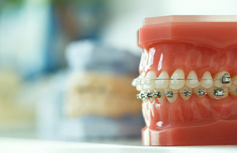
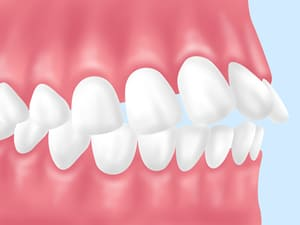
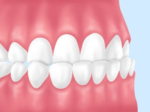
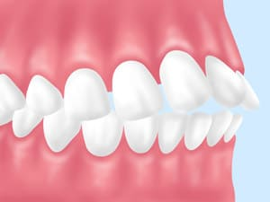
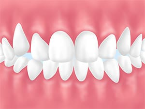
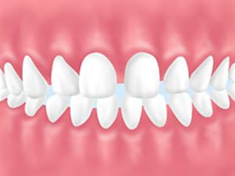
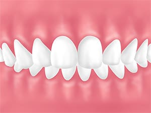
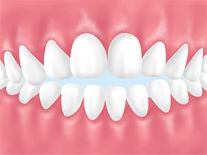
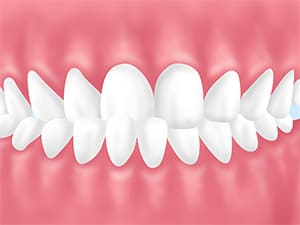

- トップ
- 矯正歯科
高田歯科クリニックの矯正歯科
横浜市港北区網島の歯医者「高田歯科クリニック」では、歯並びの改善や顎とその周辺に起こるトラブル、顎関節症の治療にも力を入れています。歯並びをきれいにすることは見た目の改善につながるだけではありません。かみ合わせを改善することで口腔内だけでなく、身体全体の健康に繋がるのです。こちらでは、高田歯科クリニックの矯正歯科・顎関節症についてご説明いたします。
矯正歯科とは

矯正歯科は、単に歯並びを整えて見た目を美しくするための治療ではありません。歯並びの乱れは見た目だけに関係するものではなく、口腔内、全身の健康へと影響を及ぼします。歯並びが悪いことでしっかりと噛めなくなってしまったり、隙間が増えて磨き残しが増え、虫歯や歯周病になりやすくなったりと、見た目以外の部分にも大きく影響します。当院では、「見た目を美しく」という審美的な面だけでなく、噛み合わせの改善から口腔内、全身の健康へとつながる本質的な矯正歯科治療を行っています。
矯正をするメリット
- 見た目が改善される
- かみ合わせが良くなり、しっかり噛んで食べることができる
- ブラッシングの際にしっかりケアできるようになる
- 発音や活舌が良くなる
- コンプレックスが解消される
| 上顎前突（じょうがくぜんとつ） | 下顎前突（かがくぜんとつ） | 上下顎前突（じょうげがくぜんとつ） |
|---|---|---|
|  |  |  |
| 通称「出っ歯」。上の前歯や上顎全体が前方に突き出している 【問題点】 ・口が閉じにくい ・転倒した際にケガをしやすい |
通称「受け口」。下の前歯や下顎全体が前方に突き出している 【問題点】 ・正しい発音がしづらい場合がある |
上下の前歯、または上下の顎全体が前方に突き出している 【問題点】 ・唇の内側のケガをしやすい |
| 叢生（そうせい） | 空隙歯列（くうげきしれつ） | 過蓋咬合（かがいこうごう） |
|  |  |  |
| 歯がデコボコに並んだり、重なり合ったりして生えている状態。「八重歯」や「乱ぐい歯」も叢生の一種 【問題点】 ・歯ブラシが届かず汚れがたまりやすくなり、虫歯や歯周病になりやすい |
通称「すきっ歯」。歯と歯の間にすき間がある状態。歯の中心にすきまがある場合、「正中離開」という 【問題点】 ・息漏れして、正しく発音できない場合がある |
咬み合わせが深い状態。下の歯が見えないほど上の歯が深くかぶさっている 【問題点】 ・上の前歯によって下の歯ぐきが傷つきやすい |
| 開咬（かいこう） | 交叉咬合（こうさこうごう） | |
|  |  | |
| 奥歯を咬み合わせても、前歯が咬み合わず、上下の歯が開いてしまう状態。「オープンバイト」ともいう 【問題点】 ・息漏れし、正しく発音できない場合がある |
顎や咬み合わせが左右にずれている状態。「クロスバイト」ともいう 【問題点】 ・正しく発音できない場合がある ・左右の顎の成育に差が生まれ、顔にゆがみが生じる場合がある |
顎の痛みや違和感は放置しないで～顎関節症の基礎知識～
顎関節症とは、口を開けるときに痛みがあったり、耳の前にある顎関節からカクカク、ジャリジャリと音がしたり、口を大きく開けられないといった症状のある、女性に多いとされるトラブルです。放って置くと、顎の関節が変形することもあります。また、症状もはっきりと顎に痛みが出るものだけでなく、顔や肩、頭の痛みを感じるケースもあります。
顎関節症の原因は、精神的ストレスや歯ぎしり・食いしばり、噛み合わせや生活習慣など無意識に行っていることが複雑に絡み合って引き起こされます。当院では、どのような症状があるか、その原因は何かとしっかり探り、一人ひとりの患者様に適切な診断・治療をご提案します。顎や周辺に異変を感じたら、お早めに当院へご相談ください。
顎関節症かんたんセルフチェック
こんな症状があると顎関節症かもしれません
- 口を大きく開けられない、口を閉じられない
- 口を大きく開けたり硬いものを噛んだりすると、顎が痛い
- 口を開けようとすると引っかかる感じがする
- 口を開けるときに、まっすぐ開けられない、曲がってしまう
- 顎を動かすとカクカク・ジャリジャリなどと音がする
- 頭痛・肩こり・耳の痛み・眼精疲労がある
- 手の人差し指・中指・薬指を縦に揃えて口に入らない